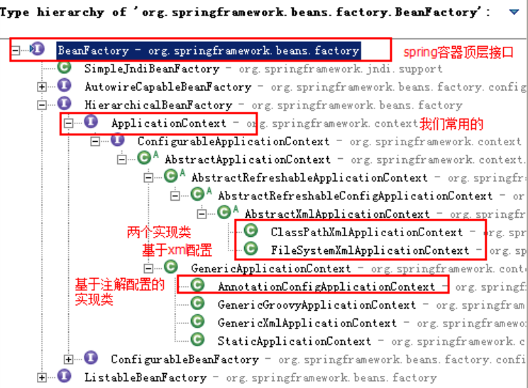
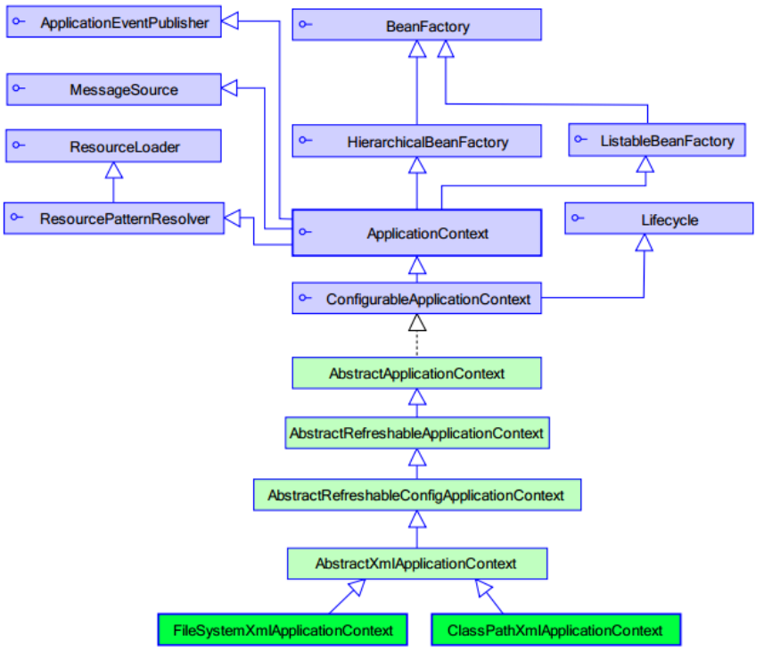

在传统方式中，我们使用new实体类，这样impl之间反复new会让程序的耦合很高。IOC就是用于降低程序间的耦合（依赖关系）。再使用spring来维护依赖关系。
前期准备
我们使用的案例是,账户的业务层和持久层的依赖关系解决。在开始 spring 的配置之前,我们要先准备一下环境。由于我们是使用 spring 解决依赖关系,并不是真正的要做增删改查操作,所以此时我们没必要写实体类。并且我们在此处使用的是 java 工程,不是 java web 工程。
准备 spring 的开发包
官网:http://spring.io/
下载地址:
http://repo.springsource.org/libs-release-local/org/springframework/spring
解压:(Spring 目录结构)
- docs:API 和开发规范.
- libs:jar 包和源码.
- schema:约束.
创建业务层接口和实现类
public interface IAccountService {
/**
* 保存账户(此处只是模拟,并不是真的要保存)
*/
void saveAccount();
}
/**
* 账户的业务层实现类
* @Version 1.0
*/
public class AccountServiceImpl implements IAccountService {
private IAccountDao accountDao = new AccountDaoImpl();//此处的依赖关系有待解决
@Override
public void saveAccount() {
accountDao.saveAccount();
}
}创建持久层接口和实现类
public interface IAccountDao {
/**
* 保存账户
*/
void saveAccount();
}
/**
*/
public class AccountDaoImpl implements IAccountDao {
@Override
public void saveAccount() {
System.out.println("保存了账户");
}
}快速入门
第一步:拷贝必备的 jar 包到工程的 lib 目录中
第二步:在类的根路径下创建一个任意名称的 xml 文件
第三步:让 spring 管理资源,在配置文件中配置 service 和 dao
<!-- bean 标签:用于配置让 spring 创建对象,并且存入 ioc 容器之中
id 属性:对象的唯一标识。
class 属性:指定要创建对象的全限定类名
-->
<!-- 配置 service -->
<bean id="accountService" class="uestc.zhangkx.service.impl.AccountServiceImpl">
</bean>
<!-- 配置 dao -->
<bean id="accountDao" class="uestc.zhangkx.dao.impl.AccountDaoImpl"></bean>第四步：测试配置是否成功
public class Client {
/**
* 使用 main 方法获取容器测试执行
*/
public static void main(String[] args) {
//1.使用 ApplicationContext 接口,就是在获取 spring 容器
ApplicationContext ac = new ClassPathXmlApplicationContext("bean.xml");
//2.根据 bean 的 id 获取对象
IAccountService aService = (IAccountService) ac.getBean("accountService");
System.out.println(aService);
//两种获取方式
IAccountDao aDao = (IAccountDao) ac.getBean("accountDao");
IAccountDao adao = ac.getBean("accountDao",IAccountDao.class);
System.out.println(aDao);
}
}总结
在传统方式中，我们使用new实体类，这样impl之间反复new会让程序的耦合很高。
使用new会造成耦合，程序依赖变高，编译时依赖而不是运行时依赖。
因此要想办法解开耦合，上一篇文章我们用的是工厂模式解耦。这里使用了spring的bean解耦
对应上一篇文章中的properties，spring使用的是xml。
对应上一篇文章中的BeanFactory，spring可以使用ApplicationContext创建对象，或者自带的BeanFactory创建对象。
BeanFactory工厂
BeanFactory工厂是为了获取spring的Ioc核心容器，并根据id获取对象，先看看BeanFactory的结构图：


上图可看出为了获取spring的Ioc核心容器，BeanFactory是Spring容器中最顶层接口，在它之下再有我们常用的ApplicationContext接口。
我们可以通过ApplicationContext或BeanFactory去创建得到创建对象：
ApplicationContext
ApplicationContext ac = new ClassPathXmlApplicationContext("bean.xml");
//2.根据id获取Bean对象
IAccountService as = (IAccountService)ac.getBean("accountService");
IAccountDao adao = ac.getBean("accountDao",IAccountDao.class);BeanFactory
Resource resource = new ClassPathResource("bean.xml");
BeanFactory factory = new XmlBeanFactory(resource);
IAccountService as2 = (IAccountService)factory.getBean("accountService");ApplicationContext和BeanFactory对比
ApplicationContext:单例对象适用
它在构建核心容器时，创建对象采取的策略是采用立即加载的方式。也就是说，只要一读取完配置文件马上就创建配置文件中配置的对象。
BeanFactory: 多例对象使用
它在构建核心容器时，创建对象采取的策略是采用延迟加载的方式。也就是说，什么时候根据id获取对象了，什么时候才真正的创建对象。
现在一般是使用ApplicationContext，现在以及废除BeanFactory直接创建的方式。
ApplicationContext只是一个接口，具体使用需要使用实现类，下介绍对比ApplicationContext的三个常用实现类
ApplicationContext的三个常用实现类
ClassPathXmlApplicationContext：它可以加载类路径下的配置文件，要求配置文件必须在类路径下。不在的话，加载不了。(更常用)FileSystemXmlApplicationContext：它可以加载磁盘任意路径下的配置文件(必须有访问权限）AnnotationConfigApplicationContext：当我们使用注解配置容器对象时,需要使用此类来创建 spring 容器。它用来读取注解，之后细讲注解。
Bean配置
bean 标签
作用:
用于配置对象让 spring 来创建的。
默认情况下它调用的是类中的无参构造函数。如果没有无参构造函数则不能创建成功。
属性:
- id:给对象在容器中提供一个唯一标识。用于获取对象。
- class:指定类的全限定类名。用于反射创建对象。默认情况下调用无参构造函数。
- scope:指定对象的作用范围。
- singleton :默认值,单例的.
- prototype :多例的.
- request:WEB 项目中,Spring 创建一个 Bean 的对象,将对象存入到 request 域中.
- session:WEB 项目中,Spring 创建一个 Bean 的对象,将对象存入到 session 域中.
- global session:将对象储存在集群的会话中，WEB 项目中,应用在 Portlet 环境.如果没有 Portlet 环境那么globalSession 相当于 session.
- init-method:指定类中的初始化方法名称。
- destroy-method:指定类中销毁方法名称。
bean 的作用范围和生命周期
单例对象:scope=”singleton”
- 一个应用只有一个对象的实例。它的作用范围就是整个引用。
- 生命周期:
- 对象出生:当应用加载,创建容器时,对象就被创建了。
- 对象活着:只要容器在,对象一直活着。
- 对象死亡:当应用卸载,销毁容器时,对象就被销毁了。
多例对象:scope=”prototype”
- 每次访问对象时,都会重新创建对象实例。
- 生命周期:
- 对象出生:当使用对象时,创建新的对象实例。
- 对象活着:只要对象在使用中,就一直活着。
- 对象死亡:当对象长时间不用时,被 java 的垃圾回收器回收了。
Bean 的实例化
默认无参构造函数
在默认情况下：它会根据默认无参构造函数来创建类对象。如果 bean 中没有默认无参构造函数，将会创建失败。
<bean id="accountService" class="uestc.zhangkx.service.impl.AccountServiceImpl"/>实例工厂
/**
* 模拟一个实例工厂,创建业务层实现类
* 此工厂创建对象,必须现有工厂实例对象,再调用方法
*/
public class InstanceFactory {
public IAccountService createAccountService(){
return new AccountServiceImpl();
}
}先把工厂的创建交给 spring 来管理。
然后在使用工厂的 bean 来调用里面的方法
factory-bean 属性：用于指定实例工厂 bean 的 id。
factory-method 属性：用于指定实例工厂中创建对象的方法。
<!--把对象的创建交给spring来管理-->
<bean id="instanceFactory" class="uestc.zhangkx.factory.InstanceFactory"/>
<bean id="accountService" factory-bean="instanceFactory" factory-method="getAccountService"/>静态工厂
/**
* 模拟一个静态工厂,创建业务层实现类
*/
public class StaticFactory {
public static IAccountService createAccountService(){
return new AccountServiceImpl();
}
}使用 StaticFactory 类中的静态方法 createAccountService 创建对象,并存入 spring 容器id 属性:指定 bean 的 id,用于从容器中获取class 属性:指定静态工厂的全限定类名factory-method 属性:指定生产对象的静态方法
<bean id="accountService" class="uestc.zhangkx.factory.StaticFactory" factory-method="createAccountService"/>依赖注入
概念
依赖注入:Dependency Injection。它是 spring 框架核心 ioc 的具体实现。
我们的程序在编写时,通过控制反转,把对象的创建交给了 spring,但是代码中不可能出现没有依赖的情况。ioc 解耦只是降低他们的依赖关系,但不会消除。
例如:我们的业务层仍会调用持久层的方法。那这种业务层和持久层的依赖关系,在使用 spring 之后,就让 Spring 来维护了。
简单的说,就是坐等框架把持久层对象传入业务层,而不用我们自己去获取。
依赖注入：
Dependency Injection
IOC的作用：
降低程序间的耦合（依赖关系）
依赖关系的管理：
以后都交给spring来维护
在当前类需要用到其他类的对象，由spring为我们提供，我们只需要在配置文件中说明
依赖关系的维护：
就称之为依赖注入。
依赖注入：
能注入的数据：有三类
基本类型和String
其他bean类型（在配置文件中或者注解配置过的bean）
复杂类型/集合类型
注入的方式：有三种
第一种：使用构造函数提供
第二种：使用set方法提供
第三种：使用注解提供构造函数注入
先对实现类添加构造：
package uestc.zhangkx.service.impl;
import org.springframework.context.support.ClassPathXmlApplicationContext;
import uestc.zhangkx.service.IAccountService;
import java.util.Date;
/**
* 账户的业务层实现类
*/
public class AccountServiceImpl implements IAccountService {
private String name;
private Integer age;
private Date birthday;
public AccountServiceImpl(String name, Integer age, Date birthday) {
this.name = name;
this.age = age;
this.birthday = birthday;
}
@Override
public void saveAccount() {
System.out.println("service中的saveAccount方法执行了。。。"+name+","+age+","+birthday);
}
}
bean.xml的改进
<?xml version="1.0" encoding="UTF-8"?>
<beans xmlns="http://www.springframework.org/schema/beans"
xmlns:xsi="http://www.w3.org/2001/XMLSchema-instance"
xsi:schemaLocation="http://www.springframework.org/schema/beans http://www.springframework.org/schema/beans/spring-beans.xsd">
<bean id="accountService" class="uestc.zhangkx.service.impl.AccountServiceImpl">
<constructor-arg name="name" value="泰斯特"/>
<constructor-arg name="age" value="18"/>
<constructor-arg name="birthday" ref="now"/>
</bean>
<bean id="now" class="java.util.Date"/>
</beans>构造函数注入：
使用的标签:constructor-arg
标签出现的位置：bean标签的内部
标签中的属性
type：用于指定要注入的数据的数据类型，该数据类型也是构造函数中某个或某些参数的类型
index：用于指定要注入的数据给构造函数中指定索引位置的参数赋值。索引的位置是从0开始
name：用于指定给构造函数中指定名称的参数赋值 常用的
=============以上三个用于指定给构造函数中哪个参数赋值===============================
value：用于提供基本类型和String类型的数据
ref：用于指定其他的bean类型数据。它指的就是在spring的Ioc核心容器中出现过的bean对象
优势：在获取bean对象时，注入数据是必须的操作，否则对象无法创建成功。
弊端：改变了bean对象的实例化方式，使我们在创建对象时，如果用不到这些数据，也必须提供。
setter注入
实体类的改进：
package uestc.zhangkx.service.impl;
import uestc.zhangkx.service.IAccountService;
import java.util.Date;
/**
* 账户的业务层实现类
*/
public class AccountServiceImpl2 implements IAccountService {
private String name;
private Integer age;
private Date birthday;
public void setName(String name) {
this.name = name;
}
public void setAge(Integer age) {
this.age = age;
}
public void setBirthday(Date birthday) {
this.birthday = birthday;
}
@Override
public void saveAccount() {
System.out.println("service中的saveAccount方法执行了。。。"+name+","+age+","+birthday);
}
}bean.xml的改进：
<?xml version="1.0" encoding="UTF-8"?>
<beans xmlns="http://www.springframework.org/schema/beans"
xmlns:xsi="http://www.w3.org/2001/XMLSchema-instance"
xsi:schemaLocation="http://www.springframework.org/schema/beans http://www.springframework.org/schema/beans/spring-beans.xsd">
<bean id="accountService2" class="uestc.zhangkx.service.impl.AccountServiceImpl2">
<property name="name" value="test"/>
<property name="age" value="21"/>
<property name="birthday" ref="now"/>
</bean>set方法注入 更常用的方式
- 涉及的标签：property
- 出现的位置：bean标签的内部
- 标签的属性
- name：用于指定注入时所调用的set方法名称
- value：用于提供基本类型和String类型的数据
- ref：用于指定其他的bean类型数据。它指的就是在spring的Ioc核心容器中出现过的bean对象
- 优势：创建对象时没有明确的限制，可以直接使用默认构造函数
- 弊端：如果有某个成员必须有值，则获取对象是有可能set方法没有执行。
集合注入
实体类的改进：
package uestc.zhangkx.service.impl;
import uestc.zhangkx.service.IAccountService;
import java.util.Arrays;
import java.util.List;
import java.util.Properties;
import java.util.Set;
import java.util.Map;
/**
* 账户的业务层实现类
*/
public class AccountServiceImpl3 implements IAccountService {
private String[] myStrs;
private List<String> myList;
private Set<String> mySet;
private Map<String,String> myMap;
private Properties myProps;
public void setMyStrs(String[] myStrs) {
this.myStrs = myStrs;
}
public void setMyList(List<String> myList) {
this.myList = myList;
}
public void setMySet(Set<String> mySet) {
this.mySet = mySet;
}
public void setMyMap(Map<String, String> myMap) {
this.myMap = myMap;
}
public void setMyProps(Properties myProps) {
this.myProps = myProps;
}
public void saveAccount(){
System.out.println(Arrays.toString(myStrs));
System.out.println(myList);
System.out.println(mySet);
System.out.println(myMap);
System.out.println(myProps);
}
}bean.xml的改进：
<?xml version="1.0" encoding="UTF-8"?>
<beans xmlns="http://www.springframework.org/schema/beans"
xmlns:xsi="http://www.w3.org/2001/XMLSchema-instance"
xsi:schemaLocation="http://www.springframework.org/schema/beans http://www.springframework.org/schema/beans/spring-beans.xsd">
<bean id="accountService3" class="uestc.zhangkx.service.impl.AccountServiceImpl3">
<property name="myStrs">
<set>
<value>AAA</value>
<value>BBB</value>
<value>CCC</value>
</set>
</property>
<property name="myList">
<array>
<value>AAA</value>
<value>BBB</value>
<value>CCC</value>
</array>
</property>
<property name="mySet">
<list>
<value>AAA</value>
<value>BBB</value>
<value>CCC</value>
</list>
</property>
<property name="myMap">
<props>
<prop key="testC">ccc</prop>
<prop key="testD">ddd</prop>
</props>
</property>
<property name="myProps">
<map>
<entry key="testA" value="aaa"></entry>
<entry key="testB">
<value>BBB</value>
</entry>
</map>
</property>
</bean>
</beans>复杂类型的注入/集合类型的注入
- 用于给List结构集合注入的标签： list array set
- 用于个Map结构集合注入的标签: map props
结构相同，标签可以互换
p 名称空间注入数据
实体类的改进：
/**
* 使用 p 名称空间注入,本质还是调用类中的 set 方法
*/
public class AccountServiceImpl4 implements IAccountService {
private String name;
private Integer age;
private Date birthday;
public void setName(String name) {
this.name = name;
}
public void setAge(Integer age) {
this.age = age;
}
public void setBirthday(Date birthday) {
this.birthday = birthday;
}
@Override
public void saveAccount() {
System.out.println(name+","+age+","+birthday);
}
}
bean.xml改进：
<beans xmlns="http://www.springframework.org/schema/beans"
xmlns:p="http://www.springframework.org/schema/p"
xmlns:xsi="http://www.w3.org/2001/XMLSchema-instance"
xsi:schemaLocation=" http://www.springframework.org/schema/beans
http://www.springframework.org/schema/beans/spring-beans.xsd">
<bean id="accountService"
class="uestc.zhangkx.service.impl.AccountServiceImpl4"
p:name="test" p:age="21" p:birthday-ref="now"/>
</beans>
此种方式是通过在 xml 中导入 p 名称空间,使用p:propertyName 来注入数据,它的本质仍然是调用类中的set 方法实现注入功能。